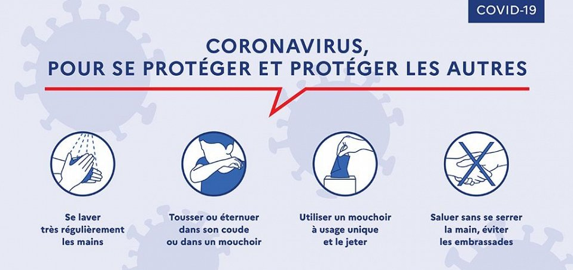

SOYEZ LES BIENVENUES SUR NOTRE SITE
C'est quoi un COVID-19?
D'où vient-il ce virus?
Comment peut-on nous proteger de ce virus?
Les Coronavirus sont une grande famille de virus, qui provoquent des maladies allant d un simple rhume (certains virus saisonniers sont des Coronavirus) a des pathologies plus severes comme le MERS-COV ou le SRAS.
Le virus identifié en janvier 2020 en Chine est un nouveau Coronavirus. La maladie provoquée par ce Coronavirus a été nommée SARS-CoV-2. par l'Organisation mondiale de la Santé - OMS.
Depuis le 11 mars 2020, l OMS qualifie la situation mondiale du COVID-19 de pandémie ; c est à dire que l épidémie est désormais mondiale.
Quels sont les symptômes du Coronavirus COVID-19 Face à l’épidémie , il existe des gestes simples pour préserver votre santé et celle de votre entourage :
-Se laver les mains très régulièrement
-Tousser ou éternuer dans son coude ou dans un mouchoir
-Saluer sans se serrer la main, arrêter les embrassades
-Utiliser des mouchoirs à usage unique et les jeter
-Eviter les rassemblements, limiter les déplacements et les contacts

Conseil Quel comportement individuel adopter face au Coronavirus ?
Si je n’ai pas de symptômes j’applique les gestes barrières (je me lave les mains très régulièrement, je tousse et j’éternue dans mon coude, j’utilise des mouchoirs à usage unique, je salue sans serrer la main et j’évite les embrassades Je réduis mes sorties au strict nécessaire : travail (si télétravail impossible), courses et visites médicales indispensables.
Si je n’ai pas de symptômes mais que je vis avec une personne malade du COVID-19 : je m’isole à domicile, je réduis strictement mes sorties sauf pour ravitaillement alimentaire, j’applique rigoureusement les gestes barrières (je me lave les mains très régulièrement, je tousse et j’éternue dans mon coude, j’utilise des mouchoirs à usage unique, je salue sans serrer la main et j’arrête les embrassades), je prends ma température 2 fois par jour et j’auto-surveille les symptômes de la maladie, je fais du télétravail. Je suis les recommandations sanitaires d’isolement à domicile disponibles sur le site du ministère de la Santé.
Si je suis un professionnel de santé ne présentant pas de symptômes mais que j’ai eu un contact avec une personne malade du COVID-19 en l’absence de mesures de protection appropriées : je m’auto-surveille en prenant ma température 2 fois par jour, j’applique les gestes barrières (je me lave les mains très régulièrement, je tousse et j’éternue dans mon coude, j’utilise des mouchoirs à usage unique, je salue sans serrer la main et j’arrête les embrassades), je porte un masque sur mon lieu de travail et avec les malades pendant 14 jours, je contacte un médecin et me fait tester systématiquement en cas d’apparition de symptômes.
Si j’ai des symptômes évocateurs de COVID 19 (toux, fièvre) : j’appelle mon médecin traitant ou un médecin par téléconsultation, je n’appelle le 3030 que si j’ai des difficultés respiratoires ou si j’ai fait un malaise, je m’isole strictement à domicile. Je me fais tester uniquement si je suis une personne fragile ou à risque, si je présente des signes de gravité, si je suis déjà hospitalisé, si je suis un professionnel de santé, si je suis une personne fragile en structure collective (EPHAD, handicap). Si je n’appartiens à aucune de ces catégories, un médecin effectue le diagnostic sur signes cliniques. Les tests en ambulatoire sont possibles. Les tests en ambulatoire, avec prélèvements à domicile, sont possibles. Si je n’appartiens à aucune de ces catégories, un médecin effectue le diagnostic sur signes cliniques.
Si je suis testé positif ou si je suis diagnostiqué cliniquement : je reste strictement à domicile, si j’ai un rendez-vous médical indispensable je porte un masque pour m’y rendre. En cas de difficulté respiratoire, j’appelle le 3030. Je me fais prescrire un arrêt de travail par mon médecin. Selon ma situation, je m’auto-surveille, ou mon médecin met en place un protocole de surveillance. J’applique les consignes de maintien à domicile, pour me protéger moi et mes proches, disponibles sur le site du ministère de la Santé. Mon isolement strict sera levé quand mon médecin confirmera ma guérison.
Si je suis testé négatif , je continue d’appliquer les gestes barrières (je me lave les mains très régulièrement, je tousse et j’éternue dans mon coude, j’utilise des mouchoirs à usage unique, je salue sans serrer la main et j’arrête les embrassades) et continue de limiter mes déplacements au strict nécessaire (travail si le télétravail est impossible, courses, visites médicales indispensables).
Si je suis un professionnel de santé et que je présente des symptômes évocateurs du COVID-19 (toux, fièvre, difficultés respiratoires) : je contacte mon médecin, le médecin du travail de ma structure de soin ou un médecin par téléconsultation. Je n’appelle le 3030 que si j’ai des difficultés respiratoires. Je m’isole strictement à domicile et je me fais tester systématiquement. Si je suis positif, je m’isole strictement et je bénéficie d’un arrêt de travail, comme le reste de la population. Si je suis négatif, je peux continuer le travail.

En Algérie:
Mondialement:
| PAYS | NOMBRE DE DÉCÉS |
| Italie | 7 503 |
| Chine | 3 293 |
| Espagne | 4 145 |
| Iran | 2 234 |
| France | 1 696 |
| US | 1046 |
| Grande-Bretagne | 465 |
| Pays-Bas | 356 |
| Allemagne | 222 | Belgique | 220 |
| Suisse | 165 |
| Corée du Sud | 131 |
| Indonésie | 78 |
| Suède | 64 | Brésil | 60 |
| Turquie | 59 |
| Japon | 45 |
| Philippines | 45 |
| Portugal | 43 | Autriche | 42 |
| Canada | 35 |
| Danemark | 34 |
| Equateur | 29 |
| Irak | 29 |
| Grèce | 23 |
| Malaisie | 23 |
| Algérie | 21 |
| Egypte | 21 | San Marino / Saint-Marin | 21 |
| Roumanie | 17 |
| Autres | 286 |
| TOTAL | 22 184 |
Les symptômes principaux sont la fièvre ou la sensation de fièvre et la toux. La perte brutale de l’odorat, sans obstruction nasale et disparition totale du goût sont également des symptômes qui ont été observés chez les malades. Chez les personnes développant des formes plus graves, on retrouve des difficultés respiratoires, pouvant mener jusqu’à une hospitalisation en réanimation et au décès.
Les premières personnes à avoir contracté le virus s’étaient rendues au marché de Wuhan dans la Province de Hubei en Chine. La maladie semblerait venir d’un animal (zoonose) mais l’origine n’a pas été confirmée.
80% des formes "mineures":
La plupart des malades du Coronavirus souffre de symptômes légers : 80,9%. La forme la plus extrême de la maladie, mettant les malades dans un état dit "grave" est de 4,7%, quand 13,8% des patients présentent des symptômes sévères.
Plus de victimes chez les hommes:
Les hommes sont à peine plus nombreux que les femmes à être atteints du virus, 51,4%, contre 48,6%, mais y succombent nettement plus. Sur les 1023 premiers décès, 63,8% étaient de sexe masculin, contre 36,2% de sexe féminin. Le taux de mortalité global est par ailleurs difficile à estimer pour l'instant.
Peu d'enfants, fort risque pour les personnes âgées:
Le rapport publié par les scientifiques chinois souligne les grandes tendances de la maladie quant aux personnes touchées. Ainsi, on remarque que les enfants ne sont pas beaucoup sujets au Covid-19. Sur 44 672 cas confirmés, seulement 2% des patients ont moins de 20 ans, et 10% moins de 30 ans. Les 1023 premiers décès n'ont enregistré qu'un seul enfant, dans la tranche d'âge 10-19 ans. Cela dit, les chercheurs n'ont pas encore pu expliquer cette faible atteinte. Sans trop de surprise, l'âge détermine les risques de décès en cas de Coronavirus. Les personnes âgées sont les plus exposées à cette éventualité. L'âge pivot est fixé autour de 60 ans. Environ 30% des personnes touchées entre 60 et 80 ans périssent, contre 12,8% entre 49 et 60 ans.
Plus de risque pour les personnes déjà malades:
L'autre facteur aggravant est le fait d'être atteint d'une maladie avant de contracter le Covid-19 telle que le diabète, l'hypertension, l'asthme, un cancer... Dans de tels cas, les risques de succomber au virus sont deux à trois fois plus élevés notent les chercheurs.
Le ministère de la Santé, a précisé début mars, que "les études internationales nous montrent que si les personnes fragiles sont les plus à risque de développer une forme grave d’infection au Coronavirus, l’ensemble de la population peut également être concernée." Quelques cas sévères hors personnes âgées ou fragiles ont en effet été constatés dans d’autres pays.
La maladie se transmet par les gouttelettes (sécrétions projetées invisibles lors d’une discussion, d’éternuements ou de toux). On considère donc qu’un contact étroit avec une personne malade est nécessaire pour transmettre la maladie : même lieu de vie, contact direct à moins d’un mètre lors d’une toux, d’un éternuement ou une discussion en l’absence de mesures de protection. Un des autres vecteurs privilégiés de la transmission du virus est le contact des mains souillées par des gouttelettes. C’est donc pourquoi les gestes barrières et les mesures de distanciation sociale sont indispensables pour se protéger de la maladie.
Pour les populations concernées (cf question précédente), il y a plusieurs possibilités de tests :
-Pour les patients diagnostiqués à l’hôpital ou avec signes de gravité, ces tests seront réalisés dans les hôpitaux.
-Pour les autres patients répondants aux critères de dépistage, il est possible d’être testé dans les laboratoires en ville, après contact du médecin traitant et prescription médicale. Les prélèvements seront réalisés à domicile. Il ne faut en aucun cas se rendre directement dans les laboratoires de biologie, mais les appeler au préalable, et seulement si on a une prescription médicale, car il existe un grand risque de contaminer d’autres malades, notamment les plus fragiles.
Concernant les patients non testés,ils seront diagnostiqués COVID-19 sur signes cliniques par un médecin. Les modalités de prise en charge médicale entre patients testés ou non restent identiques.
Il n’existe pas de vaccin contre le coronavirus COVID-19 pour le moment. De nombreux laboratoires travaillent sur l’élaboration de vaccins, mais ceux-ci ne devraient pas être disponibles avant plusieurs mois.
De manière générale, l’auto-médication par anti-inflammatoires doit être proscrite. De plus, il semblerait que les anti-inflammatoires non stéroïdiens pourraient être un facteur d’aggravation de l'infection. Ainsi, dans le cas d’une infection au coronavirus COVID-19, le paracétamol est recommandé. Si vous êtes déjà sous anti-inflammatoires ou en cas de doute
Le port du masque chirurgical n’est pas recommandé sans présence de symptômes. Le masque n’est pas la bonne réponse pour le grand public car il ne peut être porté en permanence et surtout n’a pas d’indication sans contact rapproché et prolongé avec un malade.
Ce sont les gestes barrières et la distanciation sociale qui sont efficaces.

Non. Les gants peuvent également servir de support au virus après souillage par des gouttelettes (les sécrétions respiratoires qu’on émet quand on tousse, éternue, ou discute), qui sont le moyen de transmission du coronavirus. Porter des gants est donc inutile, sauf dans des situations très spécifiques (personnels soignants réalisant des prélèvements ou gestes à risque). Ce sont les gestes barrières (se laver fréquemment les mains, tousser dans son coude, utiliser des mouchoirs à usage unique et les jeter après utilisation) et les mesures de distanciation sociale qui sont efficaces.
Oui. Les produits de nettoyage et désinfectants couramment utilisés (eau de Javel, éthanol 70%...) sont efficaces contre le COVID-19. En plus du nettoyage régulier, les surfaces qui sont fréquemment touchées avec les mains doivent être nettoyées et désinfectées deux fois par jour, notamment lorsqu’elles sont visiblement souillées. Il s’agit par exemple des poignées de porte, des boutons d’ascenseur, des interrupteurs d’éclairage, des poignées de toilettes, des comptoirs, des mains courantes, des surfaces d’écran tactile et des claviers.